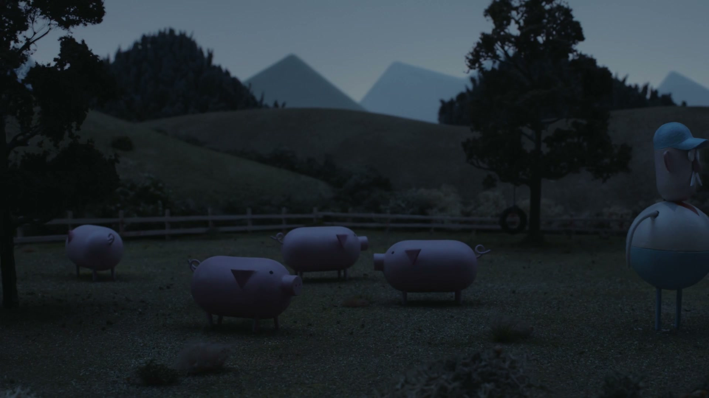
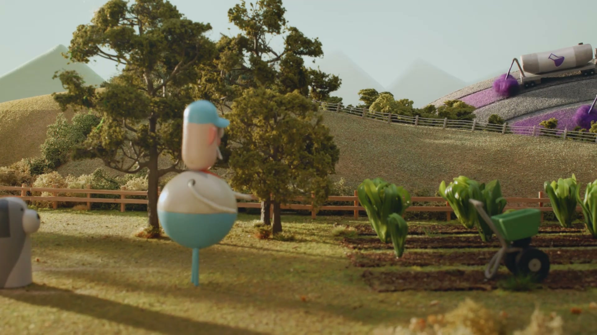
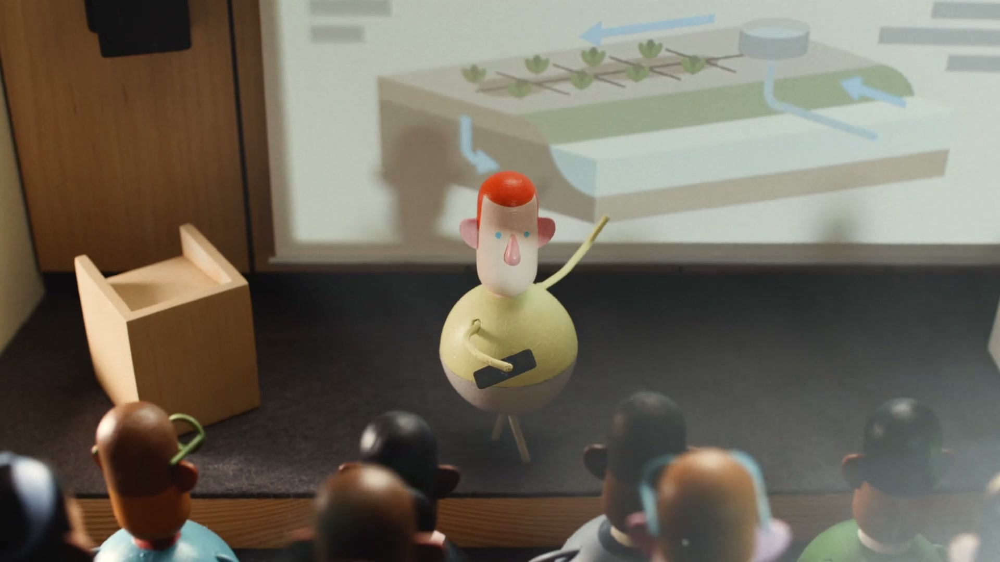
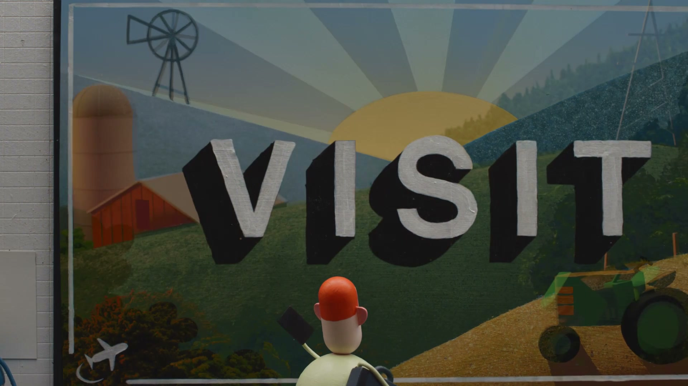
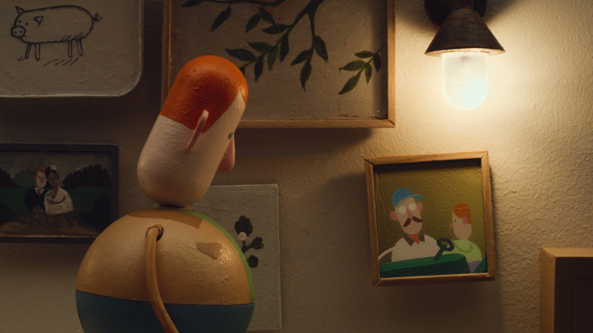
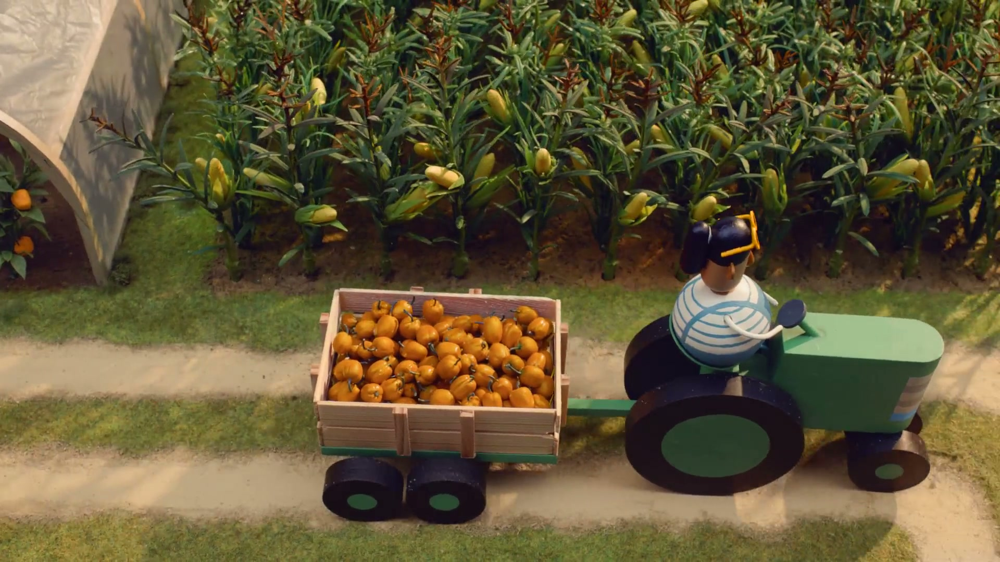
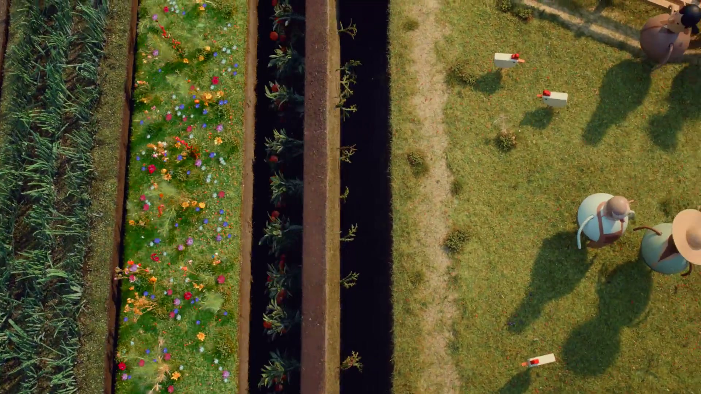
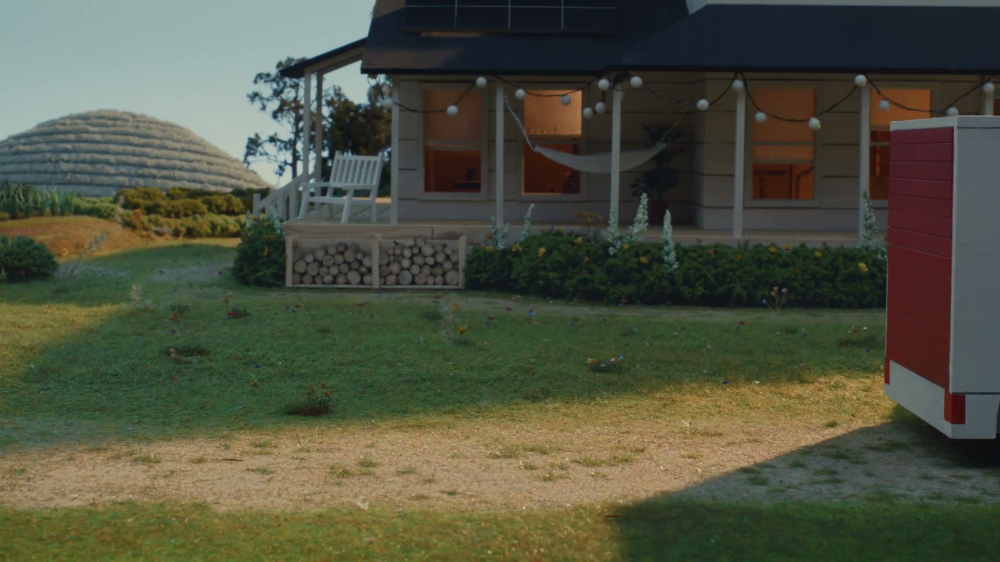

一句话创意命题
以一户农家的代际选择串起土地、动物、餐桌和社区，说明真实食物的未来始于支持每一个具体农人。
基本信息
| 项目 |
内容 |
| 品牌方 |
Chipotle |
| 制作方 |
Nexus Studios |
| 国家/地区 |
英国 |
| 发布日期 |
2022-12-24 |
| 项目性质 |
围绕可持续农业与食物系统的品牌角色动画 |
| 规格 |
1920×1080 / h264 / 24/1 fps |
| 时长 |
02:23.253 |
| 原片 |
播放原片 |
| 来源页 |
原发布/项目页 |
| 合法文件来源 |
公开 Vimeo 播放页 |
| 选择理由 |
将供应链价值主张嵌入家庭、土地与时间的连续叙事。 |
| 版权备注 |
Stash 年度项目页公开 Vimeo 嵌入；仅供内部研究。 |
原片档案与可靠来源
本报告以项目来源页与公开 Vimeo 元数据、本地 ffprobe 结果和全帧扫描为证据。品牌/制作信息来自来源页;未在来源页出现的国家、音乐或声音署名不作猜测。项目背景:围绕可持续农业与食物系统的品牌角色动画。
整条片子的故事传递
圆润的角色动画从家庭农场和孩子的日常开始，土地、番茄与牲畜构成一个可亲近的食物系统。洪水、经营压力和现代化诱惑让农场陷入危机，家人不得不在规模扩张与土地健康之间选择。时间跨越到下一代，家庭通过改良耕作、社区合作和餐饮连接重新建立循环；结尾明确提出支持农民与 Real Food 的未来，把个人坚持扩展成品牌承诺。
逐镜头/叙事节拍时间轴
| 时间 |
叙事与画面证据 |
| 00:00.000–00:28.000 |
家庭、农场和孩子建立真实食物的生活基础。 |
| 00:28.000–00:55.000 |
洪水与经营压力破坏原有平衡。 |
| 00:55.000–01:24.000 |
扩张诱惑和供应链选择制造价值冲突。 |
| 01:24.000–01:56.000 |
家人调整耕作并与社区/餐饮重新连接。 |
| 01:56.000–02:23.000 |
下一代延续农场，品牌主张与 CTA 落版。 |
关键画面(10 张,按内容需要选取)
相邻重复帧已删除;只在画面承担叙事转折、卖点、机制、高潮或落版时保留。打开高清联系表。
K01|00:02.000|家庭农场全景

- 必须展示的原因:角色、土地和生产关系一次建立。
- 在整片中的作用:定义故事世界;位于镜头 1,区间 00:00.000–00:23.417。
K02|00:18.000|孩子与作物互动

- 必须展示的原因:下一代和食物来源直接连接。
- 在整片中的作用:建立情感核心;位于镜头 1,区间 00:00.000–00:23.417。
K03|00:34.000|洪水淹没番茄田

- 必须展示的原因:稳定循环被打断。
- 在整片中的作用:触发危机;位于镜头 4,区间 00:33.083–00:36.250。
K04|00:48.000|受损土地与家庭反应

- 必须展示的原因:后果和人物情绪同框。
- 在整片中的作用:加深价值压力;位于镜头 6,区间 00:39.500–01:09.917。
K05|01:03.000|规模化方案/演示出现
- 必须展示的原因:另一套生产逻辑进入。
- 在整片中的作用:形成选择冲突;位于镜头 6,区间 00:39.500–01:09.917。
K06|01:19.000|牲畜与农场系统变化

- 必须展示的原因:供应链影响具体化。
- 在整片中的作用:扩大危机范围;位于镜头 7,区间 01:09.917–01:22.583。
K07|01:34.000|家庭重新投入土地

- 必须展示的原因:主动行动取代被动承受。
- 在整片中的作用:启动修复;位于镜头 10,区间 01:24.250–01:57.042。
K08|01:48.000|餐厅/社区与农场连接

- 必须展示的原因:生产端和消费端同框。
- 在整片中的作用:兑现品牌角色;位于镜头 10,区间 01:24.250–01:57.042。
K09|02:04.000|下一代延续农场

- 必须展示的原因:时间跨度获得人物证据。
- 在整片中的作用:完成代际传递;位于镜头 12,区间 01:57.583–02:19.667。
K10|02:18.000|支持农民与真实食物 CTA
- 必须展示的原因:故事转为明确行动。
- 在整片中的作用:完成品牌主张;位于镜头 12,区间 01:57.583–02:19.667。
表达手法拆解
- 运动:播种、浇灌、动物移动、洪水和餐桌动作形成生产循环；前段圆润缓慢，危机段用更快切点与环境运动打断稳定。
- 镜头:玩具模型般的高视点展示农场系统，中近景关注家庭表情；后段通过连续横移把土地、运输和餐厅连成一条链。
- 转场:季节颜色、圆形作物和车辆路径承担时间跳跃，洪水遮挡是最显著的章节切换，餐盘则把田间直接匹配到消费端。
- 色彩、材质与光影:温暖土色、绿色田地和鲜红番茄构成亲和色板，危机段降饱和并加入浑浊水色，恢复段重新变亮。
- 排版:正文依赖角色叙事，结尾以清晰大字给出 Supporting Our Farmers 与 Future of Real Food 的行动结论。
音乐与声音设计
音乐署名与声音规格
- 音乐:曲名/作者未公开。
- 声音设计/混音:声音设计/混音署名未公开。
- 音轨:aac,48000 Hz,2 声道(stereo),时长 02:23.253。
- 响度:综合 -15.4 LUFS,LRA 10.0 LU,真峰值 -1.1 dBFS;样本峰值 -2.7 dBFS。
- 速度:自动估计约 143 BPM,置信度 0.29;只作为速度区间参考。
风格、音色、结构与情绪曲线
约 143 BPM、约 -15.4 LUFS，民谣/流行推进与家庭成长呼应；危机段提高密度，结尾 CTA 前回落。 频谱与波形支持合成低频、宽带打击性瞬态和持续音乐底层的判断;具体乐器、合成器型号、调性与和声进行未获公开署名,也未由当前分析可靠识别,因此不猜测。
分段动态:前段中位能量约 -29.7 dBFS;中段中位能量约 -24.0 dBFS;后段中位能量约 -22.2 dBFS。这些数据用于描述强弱曲线,不替代人工听辨曲式。
拟音、环境、人声、空间与混音
农场环境、动物、雨水、机械、餐厅与社区声层让供应链可听；音乐署名未公开，报告仅按可听证据判断结构。 立体声轨存在,但仅凭综合波形不能可靠断言具体声像位置、混响器、压缩器或失真链路;这些制作手段均标记为无法验证的制作推测。未发现可核验的旁白/人声署名。
音画同步时间表
| 时间 |
听到了什么(可复核证据) |
画面发生什么 |
同步关系 |
共同表达 |
| 00:08.980 |
短时能量较前置基线抬升 25.8 dB |
家庭农场全景 |
重音提前切点 14.44s;最近切点 00:23.417 |
定义故事世界 |
| 00:10.280 |
短时能量较前置基线抬升 26.2 dB |
孩子与作物互动 |
重音提前切点 13.14s;最近切点 00:23.417 |
建立情感核心 |
| 00:13.040 |
短时能量较前置基线抬升 19.0 dB |
孩子与作物互动 |
重音提前切点 10.38s;最近切点 00:23.417 |
建立情感核心 |
| 01:22.320 |
短时能量较前置基线抬升 22.6 dB |
牲畜与农场系统变化 |
重音提前切点 0.26s;最近切点 01:22.583 |
扩大危机范围 |
| 01:28.500 |
短时能量较前置基线抬升 15.8 dB |
家庭重新投入土地 |
重音滞后切点 4.25s;最近切点 01:24.250 |
启动修复 |
| 01:33.500 |
短时能量较前置基线抬升 16.8 dB |
家庭重新投入土地 |
重音滞后切点 9.25s;最近切点 01:24.250 |
启动修复 |
- 静音/留白:00:00.000–00:01.040、00:03.060–00:04.020、00:04.300–00:04.520、00:04.980–00:05.140、00:05.220–00:05.680、00:05.880–00:06.180、00:06.220–00:07.240、00:09.460–00:10.000、00:10.100–00:10.260、00:11.660–00:11.860、00:11.900–00:12.080、00:12.540–00:12.700、00:12.720–00:12.880、01:20.040–01:20.300、01:20.380–01:22.300、02:22.960–02:23.260。
- J-cut/L-cut:当前自动证据不能可靠分离画外声与镜头内部声,未强行标注;跨切点保持连续能量时仅视为声音桥候选。
可复用的声音方法与边界
- 用少数显著瞬态绑定产品 reveal 或结构切点;连续高频使用会降低区分度。
- 让中段能量抬升承担功能/机制高潮,结尾通过衰减或静音给品牌落版留空间;短电商版需压缩过长留白。
- 当画面依赖匹配剪辑时,用连续音乐底层跨越切点,再用局部重音标记新信息;若需要解释真实机械功能,应加入可核验的材质拟音而非只靠 whoosh。
品牌/产品卖点的植入方式
Chipotle 不只展示餐食，而把品牌置于农场、供应链与社区之间，产品价值从生产伦理自然抵达餐桌。
可复用方法、观察边界与改进建议
- 把产品结构或使用动作变成转场逻辑,避免效果与卖点分离。
- 先明确一个情绪母题,再让颜色、运动和声音重音共同服务它。
- 高信息密度段落后安排停顿或单一落版,让品牌真正被看见。
- 可听/可见事实:本报告中的规格、时间码、帧变化、响度、峰值、静音与短时重音。
- 基于证据的判断:风格、情绪、转场目的与卖点植入,均对应具体时间码和画面/声音指标。
- 无法验证的制作推测:具体插件、乐器型号、调式、采样库、混响/压缩参数;报告未将其写成事实。
- 改进建议:若用于转化广告,应为当前品牌片增加更明确的单一 CTA 与可读功能字幕;若用于发布会大屏,应保留当前尺度、留白和宽频重音。
全片逐帧与镜头索引
全片实际扫描 3,438 帧,识别 13 个镜头/叙事节拍;正文按镜头聚合,不机械重复相邻帧。
| # |
起止时间 |
时长 |
边界变化分 |
代表帧 |
| 1 |
00:00.000–00:23.417 |
23.42s |
0.0000 |
查看 |
| 2 |
00:23.417–00:28.958 |
5.54s |
0.5300 |
查看 |
| 3 |
00:28.958–00:33.083 |
4.13s |
0.3774 |
查看 |
| 4 |
00:33.083–00:36.250 |
3.17s |
0.4740 |
查看 |
| 5 |
00:36.250–00:39.500 |
3.25s |
0.4989 |
查看 |
| 6 |
00:39.500–01:09.917 |
30.42s |
0.3352 |
查看 |
| 7 |
01:09.917–01:22.583 |
12.67s |
0.1504 |
查看 |
| 8 |
01:22.583–01:23.833 |
1.25s |
0.0573 |
查看 |
| 9 |
01:23.833–01:24.250 |
0.42s |
0.1167 |
查看 |
| 10 |
01:24.250–01:57.042 |
32.79s |
0.0588 |
查看 |
| 11 |
01:57.042–01:57.583 |
0.54s |
0.1029 |
查看 |
| 12 |
01:57.583–02:19.667 |
22.08s |
0.0831 |
查看 |
| 13 |
02:19.667–02:23.253 |
3.59s |
0.0577 |
查看 |
权利与使用说明
Stash 年度项目页公开 Vimeo 嵌入；仅供内部研究。
本地文件、关键帧和音频证据仅用于内部研究;不得替代原作者发布页,不得二次上传、传播或商用。